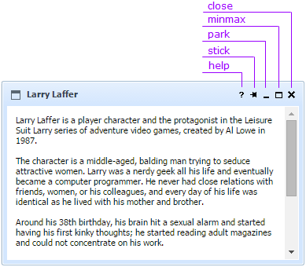
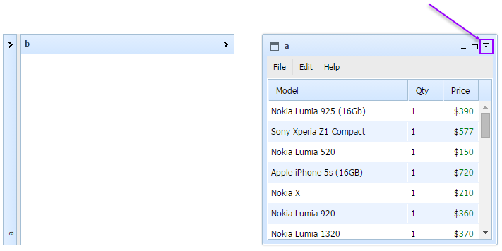

The window buttons are presented in the image below:

The "Help" button is used to fire the onHelp event.
The "Stick" button is used to show the window on top of other windows.
The "Park" button is used to collapse a window into the header.
The "Minmax" button is used to maximize/minimize the window.
The "Close" button is used to close the window.
The "Dock" button appears automatically instead of the "Close" button in case of cells' docking/undocking.

A button can be accessed in the following way:
var btn = myWins.window(id).button(id);
Default buttons ids are:
To hide a button use the method hide()
myWins.window(id).button(id).hide();
To show a button use the method show():
myWins.window(id).button(id).show();
User-buttons also inherit these methods.
The button can be enabled/disabled by user with the help of the methods enable() and disable()
myWins.window(id).button(id).enable();
myWins.window(id).button(id).disable();
User-buttons also inherit these methods.
Note: in some cases button enabling/disabling is determined by Object. For example, when the window is Parked Up, resize buttons are inactive/disabled. But they become active/enabled when the window is Parked Down. Thus, resize buttons are disabled by Object.
Back to top